A안
엽전 「한 푼」
먹색 · 금박 · 주홍 매듭
'푼'이 원래 엽전을 세던 말이라, 엽전을 로고로 삼고 먹색 상자에 금박 엽전과 붉은 국화매듭을 달았습니다. 묵직하고 귀한 거래처 선물.
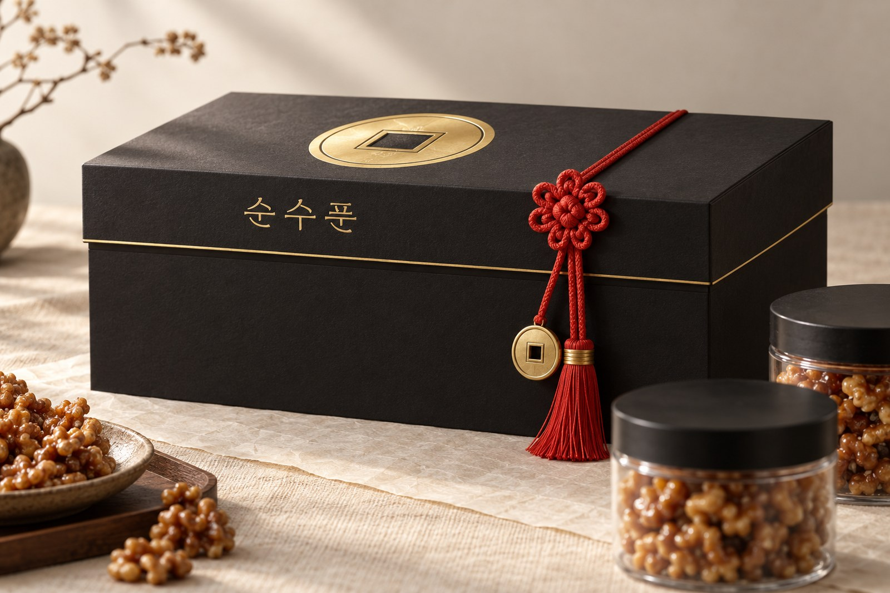
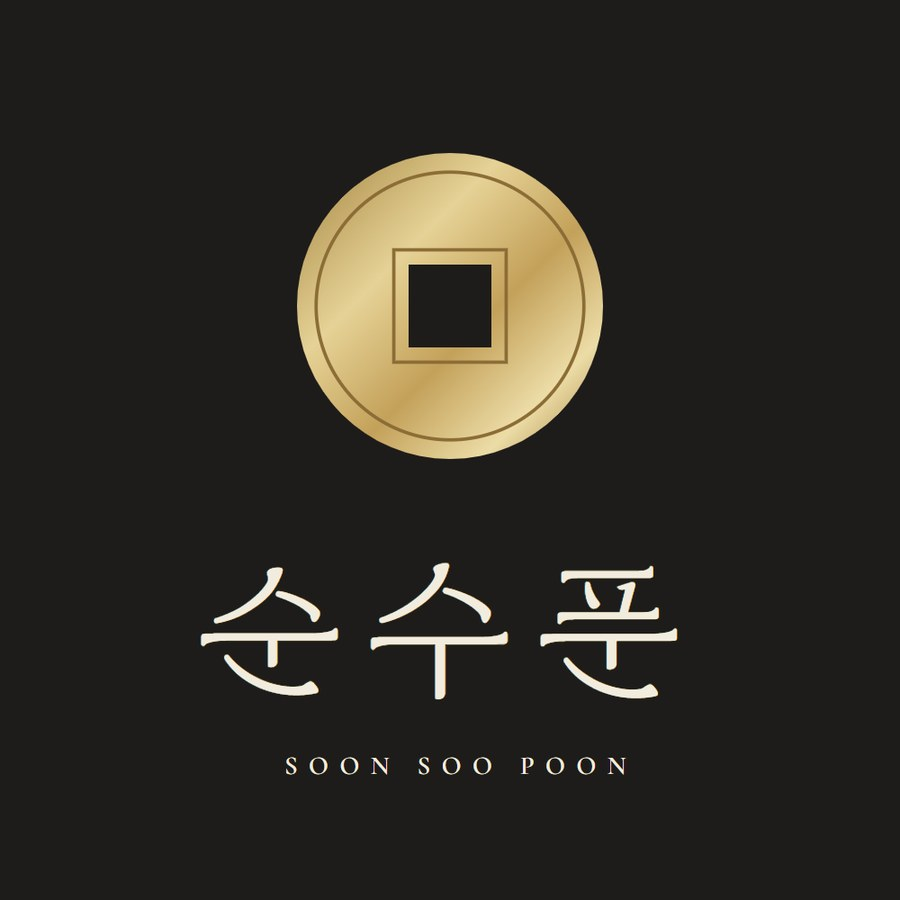
- 첫인상묵직하고 귀하다
- 명절같은 상자를 주홍 보자기로
- 통·한 봉엽전 구멍이 견과 창
- 만드는 부담금박·형압 + 매듭 손작업 — 중상
- 아쉬운 점엽전 그림 상표 검색 필요
B안
백자 「달항아리」
흰 종이 · 무늬 없는 형압 · 연청자 리본
하얀 달항아리처럼 '순수'를 그대로 보여 주는 안. 잉크 없이 눌러 찍은 달항아리, 연한 청자색 리본 하나로 끝냅니다.
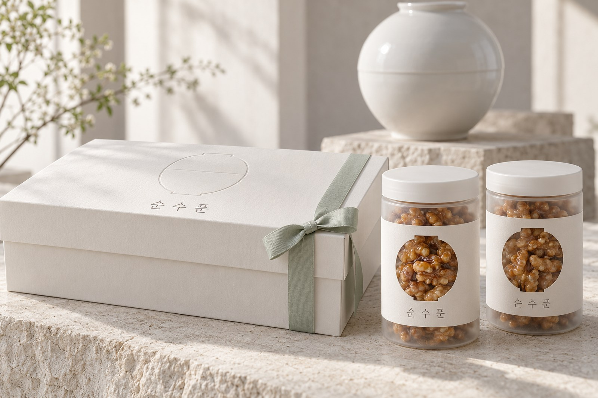
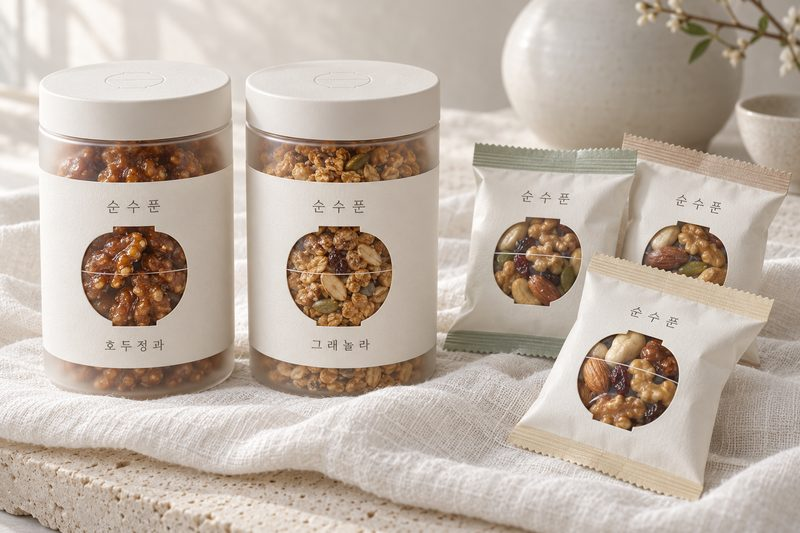
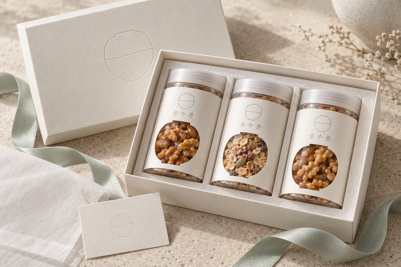
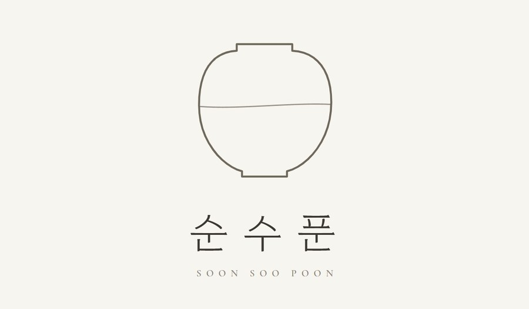
- 첫인상깨끗하고 세련되다
- 명절화사함은 덜하다
- 통·한 봉달항아리 모양 창, 가장 깔끔
- 만드는 부담형압 위주 — 중
- 아쉬운 점흰 상자는 때가 타고, '푼'과의 연결은 약하다
C안
인장 「한지 · 쪽빛 보자기」
한지 · 오동나무 · 쪽빛 · 붉은 도장
붉은 도장과 붓글씨, 한지 띠를 두른 오동나무 함을 쪽빛 보자기로 쌉니다. 장인이 손으로 만든 듯한 정성의 결.
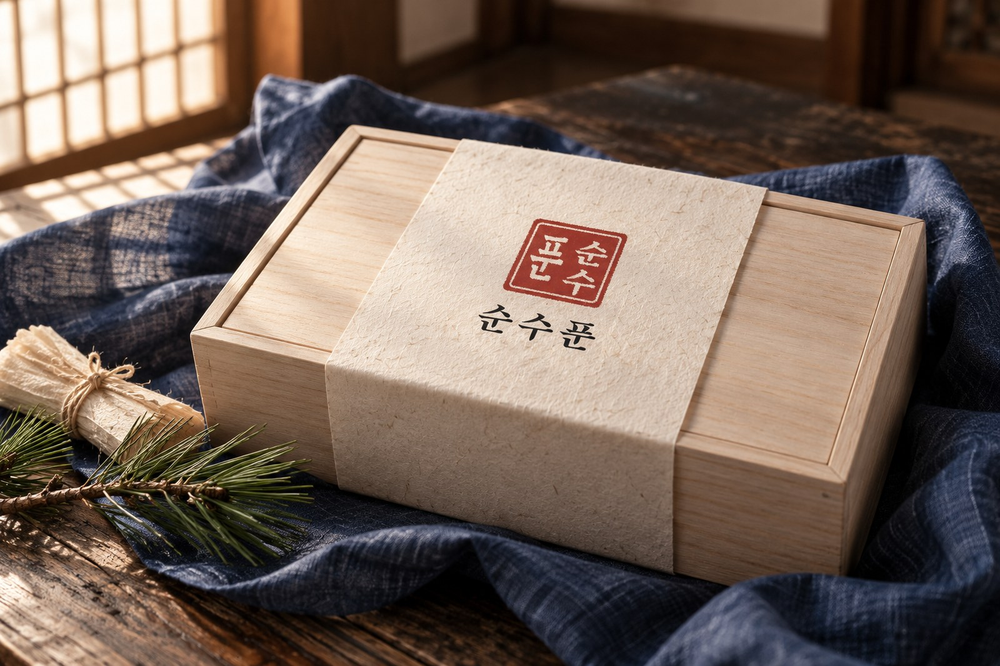
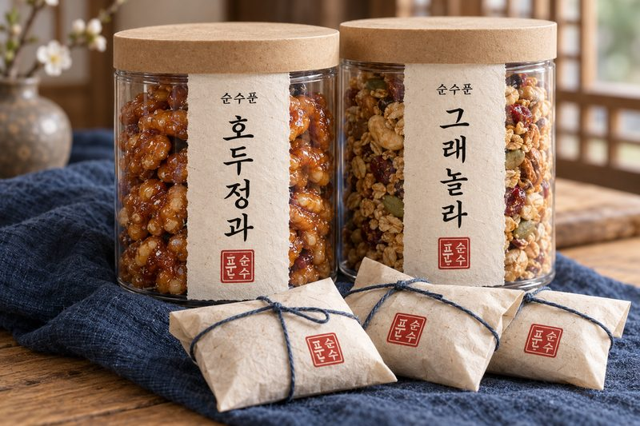
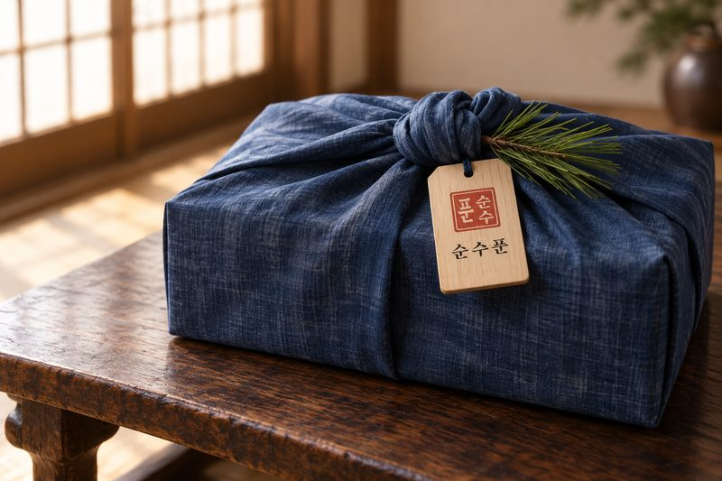
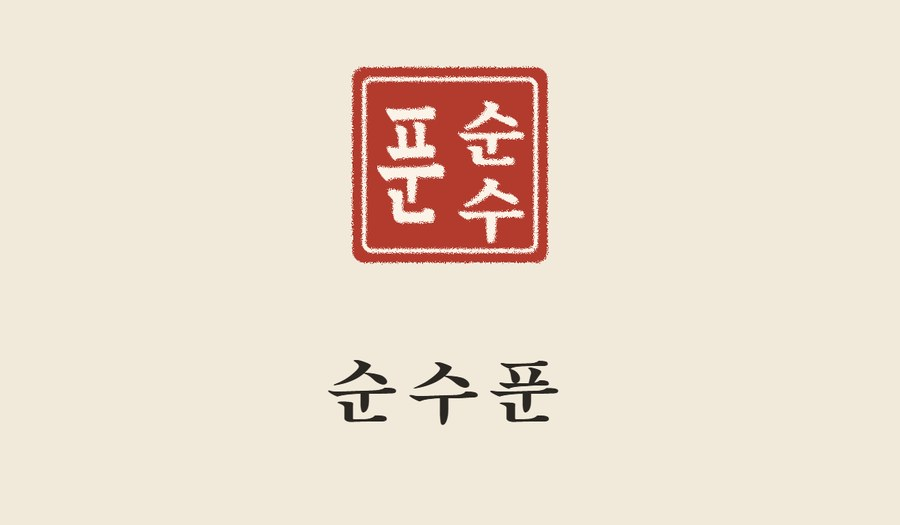
- 첫인상정성스럽고 전통적이다
- 명절보자기 그대로 명절 선물
- 통·한 봉한지 라벨·크라프트 봉지, 정감 있다
- 만드는 부담오동나무 함·보자기 — 높음
- 아쉬운 점도장 로고는 흔하고 오동나무 단가가 높다
D안
민화 「다람쥐」
민화 그림 · 원형 틴 · 굿즈
국립박물관 굿즈처럼, 호두를 든 다람쥐 민화를 상자·틴·봉지에 그대로 입힙니다. 받는 사람이 즐거워하고, 굿즈로 넓히기 가장 쉽습니다.
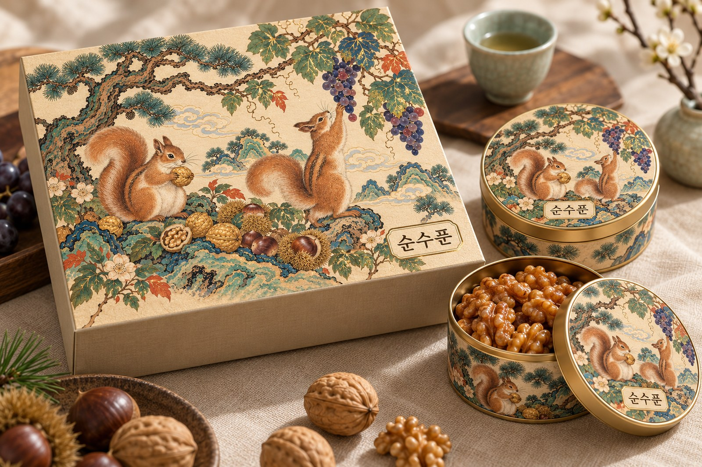
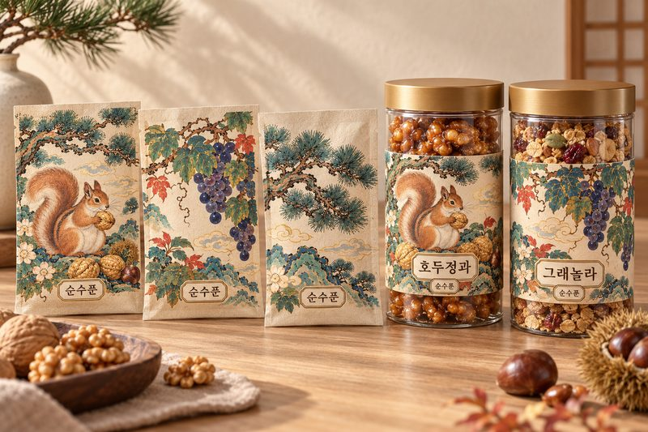
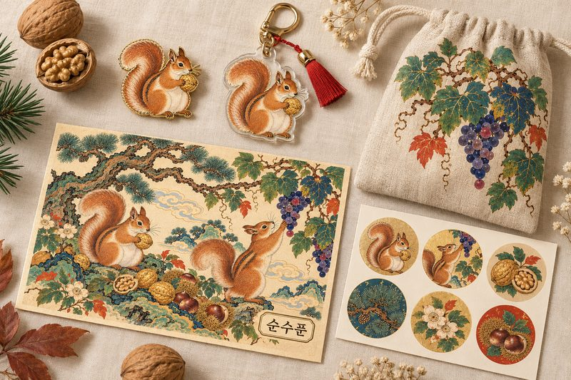
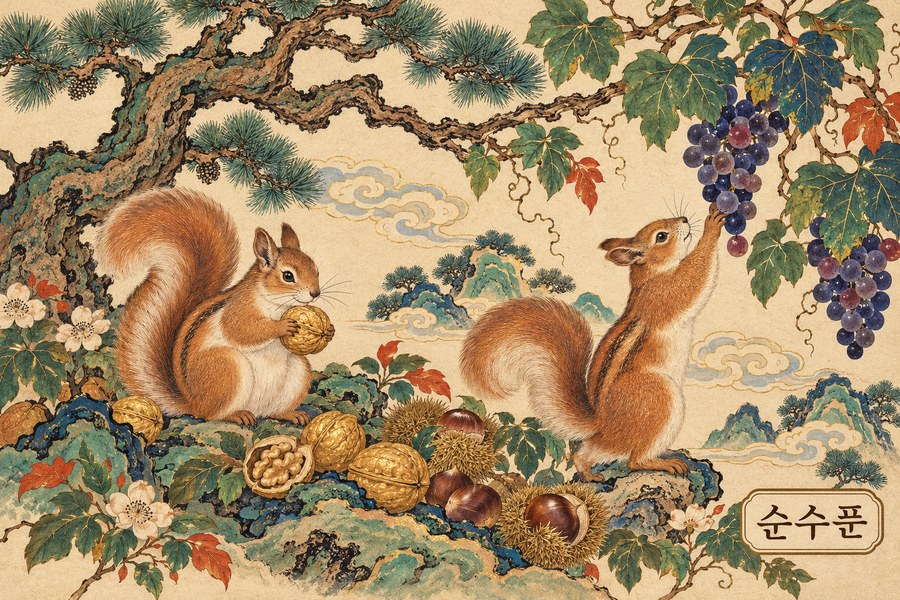
- 첫인상예쁘고 즐겁다
- 명절그림만 바꿔 계절 한정판
- 통·한 봉그림이 다 달라 고르는 재미
- 만드는 부담인쇄 위주 — 중, 그림 원화 제작비 별도
- 아쉬운 점거래처 선물의 무게감은 덜하다
한눈에 비교
| A안 엽전 「한 푼」 | B안 백자 「달항아리」 | C안 인장 「한지 · 쪽빛 보자기」 | D안 민화 「다람쥐」 | |
|---|---|---|---|---|
| 첫인상 | 묵직하고 귀하다 | 깨끗하고 세련되다 | 정성스럽고 전통적이다 | 예쁘고 즐겁다 |
| 명절 | 같은 상자를 주홍 보자기로 | 화사함은 덜하다 | 보자기 그대로 명절 선물 | 그림만 바꿔 계절 한정판 |
| 통·한 봉 | 엽전 구멍이 견과 창 | 달항아리 모양 창, 가장 깔끔 | 한지 라벨·크라프트 봉지, 정감 있다 | 그림이 다 달라 고르는 재미 |
| 만드는 부담 | 금박·형압 + 매듭 손작업 — 중상 | 형압 위주 — 중 | 오동나무 함·보자기 — 높음 | 인쇄 위주 — 중, 그림 원화 제작비 별도 |
| 아쉬운 점 | 엽전 그림 상표 검색 필요 | 흰 상자는 때가 타고, '푼'과의 연결은 약하다 | 도장 로고는 흔하고 오동나무 단가가 높다 | 거래처 선물의 무게감은 덜하다 |
고르실 때 참고
거래처 선물이 첫째라면 — A안 엽전. 상자부터 묵직하고, 이름 뜻이 로고와 바로 이어집니다.
깔끔하고 세련된 쪽이라면 — B안 백자. 장식 없이 형압만으로 고급스럽습니다.
정성·전통을 앞세운다면 — C안 인장. 오동나무 함과 보자기 단가가 가장 높습니다.
일반 판매와 굿즈로 넓히려면 — D안 민화. 박물관 굿즈처럼 예쁘고, 계절마다 그림만 바꿔 한정판을 낼 수 있습니다.
모든 사진은 실물 촬영본이 아니라 제작 전에 완성 모습을 미리 보도록 만든 실사 시안 이미지입니다. D안 그림도 시안용이라, 고르시면 그림 작가에게 원화를 새로 맡깁니다. 로고는 정하기 전에 상표 검색을 먼저 합니다.